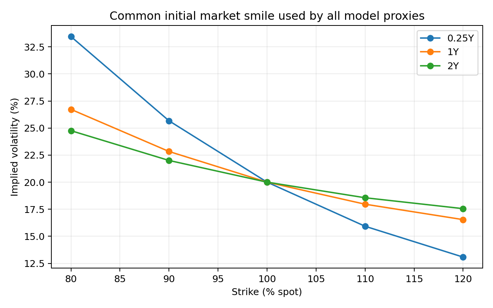
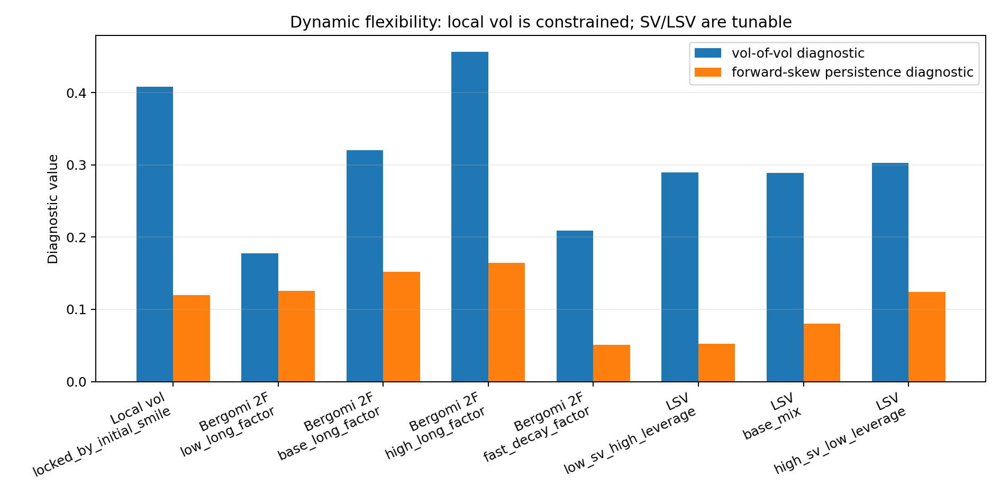
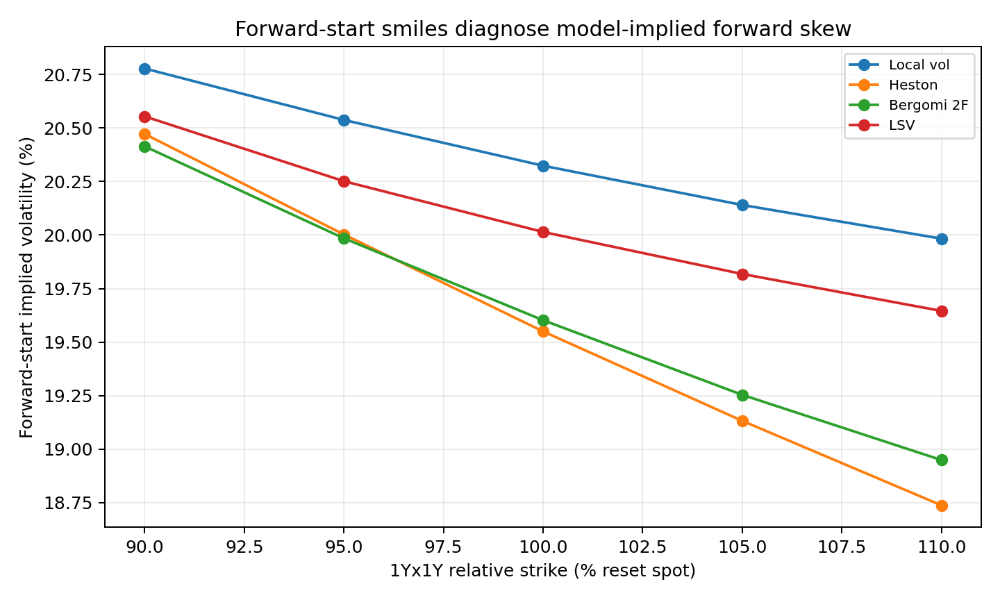
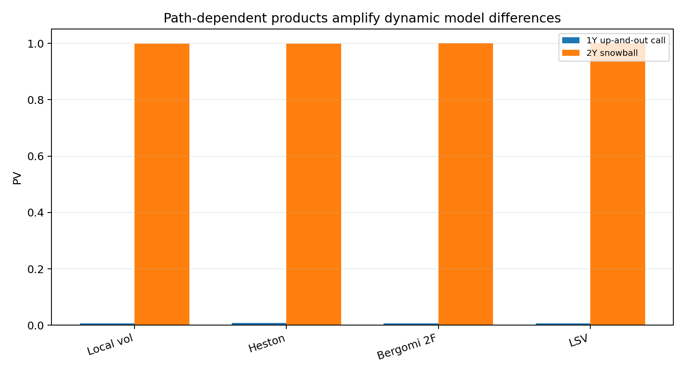
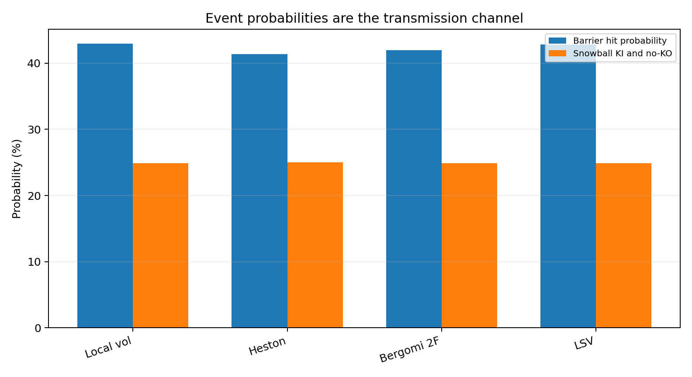
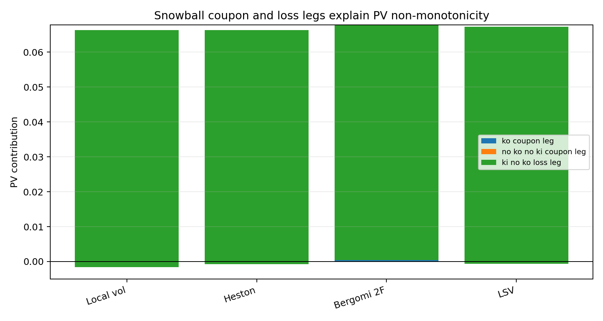

同一初始微笑下的模型动态与产品定价差异
摘要
本文关注两个问题。第一，local vol、Heston、Bergomi 双因子和 LSV 为什么会对 forward skew、vol of vol persistence 和 spot-vol dynamics 给出不同刻画？第二，在同一初始香草微笑下，哪些产品会把这些动态假设转化为可见的价格差异、事件概率差异和 payoff leg 差异？
实验采用一阶段简化方案：所有模型共享同一个 toy market vanilla smile；香草价格直接由该共同微笑给出，视为四类模型均已完成初始截面校准。随后先检验模对波动率动态的刻画效果，主要基于local vol、Bergomi 双因子和 LSV 模型；再用 forward-start、上敲出障碍期权和雪球检验这些波动率动态差异如何进入产品价格。结果显示，香草价格在共同截面下一致；forward-start smile、障碍 PV 和雪球 payoff legs 反映了模型对 forward skew、vol of vol persistence 和 spot-vol dynamics 的不同设定。
本文的结论如下：本文先回答模型能表达什么动态，再回答这些动态在哪些产品上变成价格差异。判断“哪个模型对某个给定产品定价最合理”，还需要市场奇异期权报价、历史 realized dynamics 或动态对冲 P&L 等外部标准。
1. 研究问题
前一个实验项目“波动率动态敏感性：香草、障碍与雪球”说明：香草、障碍、雪球对波动率动态的敏感性并不相同。本实验进一步分成两层问题。
第一层是模型层面：
- 如果四类模型都从同一初始香草微笑出发，香草价格是否仍然无法区分模型动态？
- 不同模型为什么会对 forward skew、vol of vol 和 spot-vol dynamics 给出不同预测？
- 在同一初始微笑保持不变时，local vol、Bergomi 双因子和 LSV 是否对波动率动态给出相似的刻画？如果不同，差异具体来自哪些参数和理论核函数？
第二层是产品层面：
- forward-start smile 如何反映模型对未来偏斜和 vol of vol persistence 的预测差异？
- 障碍期权和雪球是否会通过触障概率、KI/KO 事件和 payoff leg 分解，把模型动态差异转化为价格差异？
本项目暂不检验动态对冲 P&L。对冲实验需要额外指定真实路径生成机制、重校准规则、再平衡频率和交易成本，适合放在后续扩展。
因此，本实验定位为模型表达能力诊断。它检验某类模型能否表达特定动态机制，模型合理性排序和真实市场报价选择留待后续研究。
2. 理论机制：为什么模型动态会不同
2.1 香草价格只固定截面，不固定动态
欧式看涨期权价格为
它只依赖 的风险中性边际分布。Dupire 公式进一步说明，一般随机波动率扩散在香草层面只被识别为条件方差：
因此，同一初始香草曲面无法唯一决定 如何随机演化，也无法唯一决定未来偏斜、spot-vol covariance 或 vol of vol。香草价格提供截面校准约束；奇异期权价格包含额外的动态假设。
这给出本实验对“模型能做到什么”的第一层回答：模型在香草截面之外补充一套关于未来微笑、波动率随机性和现货-波动率联动的假设。这些假设无法仅由当前 vanilla surface 验证，却会进入 forward-start、障碍和雪球的估值。
2.2 Local vol 的动态锁定
局部波动率模型可以通过 Dupire 精确匹配初始香草曲面。匹配完成后，模型的唯一状态变量是 ，局部波动率函数 已由当前 vanilla surface 确定。这里的“动态被当前微笑锁定”指的是：模型没有额外的随机波动率因子、vol-of-vol 参数或 spot-vol correlation 参数；SSR、vol of vol 和未来偏斜都只能从当前曲面的偏斜期限结构和 ATM 波动率期限结构推出。
第一，局部波动率模型的 SSR 满足
这个式子只使用当前 ATMF skew term structure 。因此 local vol 下 ATM vol 对 spot 的响应率由当前 skew term structure 决定，模型中没有可单独设定的响应率参数。
第二，局部波动率模型的 vol of vol 给出
这里的输入仍然是 、当前期限 的 skew ，以及当前 ATM vol term structure。由于 已由上一个公式确定，local vol 中的 vol of vol 也由当前曲面推出。
第三，局部波动率模型的未来偏斜 满足
该公式说明，未来时刻 、剩余期限 的 forward skew 也由当前 skew term structure 外推出。对典型递减的权益偏斜期限结构，local vol 往往把当前偏斜解释为近期局部波动率斜率，因此远期起始后的偏斜会变弱。
因此，2.2 节的关键结论是：local vol 隐含的波动率动态没有独立自由度。给定当前 vanilla surface 后，SSR、vol of vol 和 forward skew 已经由当前曲面的已知信息决定。后文的动态可调性诊断以这一点作为 local vol 与 SV/LSV 的对照基准。
2.3 Heston、Bergomi 双因子与 LSV 的差异
Heston 的优势是解析便利，但 前向方差由单一状态变量控制。其 vol of vol 期限结构和偏斜期限结构受单一均值回复尺度限制。根据 Heston 偏斜短期极限，
这说明 Heston 中 forward skew、vol of vol 和当前方差水平被机械绑定。
与 local vol 相比，Heston 至少引入了一个随机方差因子 ，因此可以通过参数控制部分动态特征： 控制瞬时方差的 vol of vol， 控制 spot-vol correlation 和偏斜方向， 控制方差均值回复速度， 与长期均值控制当前方差水平和期限结构。但这些参数共同作用在同一个状态变量 上，所以 Heston 的可调性是“单因子可调”：调高 会同时影响 vol of vol 和偏斜强度，改变 会同时改变偏斜和 spot-vol beta，改变 会同时改变 forward variance 的衰减速度和 forward skew 持续性。
Bergomi 双因子模型直接对前向方差曲线建模。双因子 SDE为
能够用短、长两个时间尺度刻画 vol of vol 期限结构和曲线形变，见 双因子 vol of vol 期限结构 与 前向方差相关性。
它的额外动态参数更直接对应 Bergomi 关心的动态量： 控制前向方差整体 vol of vol 幅度， 控制短、长两个因子的衰减速度， 控制短因子与长因子的权重， 控制前向方差曲线不同期限段的共同运动或相对形变， 控制现货与两个方差因子的相关性，从而控制当前偏斜和 forward skew 的期限结构。也就是说，Bergomi 2F 可以把“方差曲线波动多大”“短端和长端如何一起动”“spot-vol covariance 分布在哪些期限段”分开设定。
LSV 则在局部波动率截面校准与随机波动率动态之间折中。其 leverage function 满足 自洽校准条件
第 12 章给出 SSR 与未来偏斜反向相关：同一初始偏斜下，近期 spot-vol covariance 越强，远期偏斜通常越弱。
LSV 的额外自由度来自两部分。第一，底层 SV 参数（例如 Bergomi 型的 ）控制随机波动率成分的 vol of vol、spot-vol covariance 和 forward skew 持续性。第二，leverage function 用来保证当前 vanilla surface 的截面校准，并决定当前偏斜中有多少由局部波动率成分承担。随机波动率成分承担得越多，未来偏斜通常越持久；局部成分承担得越多，模型越接近 local vol，未来偏斜衰减越快。因此 LSV 的关键在于分配偏斜来源：一部分服务于当前截面拟合，一部分服务于未来动态设定。
为便于和实验设定对应，可以把三类模型的额外参数整理如下。
| 模型 | 额外参数 | 主要控制的动态 | 约束方式 |
|---|---|---|---|
| Heston | 控制方差扰动幅度； 控制 spot-vol covariance 和偏斜符号； 控制扰动衰减速度； 控制方差水平和期限结构。 | 所有动态通过同一个方差状态变量传导，vol of vol、skew 和均值回复难以分别设定。 | |
| Bergomi 2F | 控制前向方差整体扰动幅度； 控制短端和长端扰动的衰减； 控制两因子权重； 控制曲线共同运动； 控制不同期限段的 spot-vol covariance。 | 直接作用于前向方差曲线，可以分别设定 vol of vol 期限结构、forward skew 持续性和曲线形变。 | |
| LSV | 底层 SV 参数与 leverage function | SV 参数控制随机波动率动态；leverage function 保持当前 vanilla surface 校准，并调节当前偏斜由 local 成分或 SV 成分承担的比例。 | 当前截面拟合由 leverage function 保证，未来动态由 local 成分和 SV 成分的分配共同决定。 |
2.4 模型的作用和边界
在 Bergomi 的框架下，模型至少承担三类职能。
第一，模型把当前香草微笑扩展为一套联合动态假设。Local vol 的动态由当前微笑给定；Heston 用单一方差因子生成 skew 与 vol of vol；Bergomi 双因子直接建模前向方差曲线；LSV 同时保留香草校准与随机波动率动态。
第二，模型给出香草期权无法直接复制的风险价格输入。Forward skew、vol of vol persistence 和 spot-vol beta 对 cliquet、障碍、雪球重要，但这些量通常缺少足够流动的市场报价来唯一校准。因此模型输出的是“在这套动态假设下的价格”。
第三，模型可以帮助做产品敏感性归因。如果两个模型给出不同雪球价格，payoff leg 分解可以说明差异来自 KO coupon、no-KO/no-KI coupon，还是 KI/no-KO loss。归因结果本身不构成模型优劣判断。
因此，模型不能单独回答“哪个价格最合理”。“合理”需要外部检验标准，例如可交易奇异期权报价、历史 realized SSR/vol of vol/forward skew persistence，或真实路径下的对冲 P&L。
对 cliquet 而言，主要风险来自 时刻的 forward vol、forward skew 和 vol of vol。支持 Bergomi 双因子或 LSV 的证据应来自香草微笑之外。
一类证据是 forward-start option、call-spread cliquet、ratchet、resettable option 或 cliquet strip 的 OTC 报价。这些产品直接给出市场对未来微笑的定价。如果 Bergomi 双因子或 LSV 能在保持当前 vanilla 校准的同时更好匹配这些报价，就能支持它们优于 local vol 或 Heston。
次直接的证据来自方差和波动率产品，例如 variance swap term structure、variance swaption、VIX futures/options、corridor variance 等。若市场显示 forward variance 的 vol of vol 期限结构需要短、长两个时间尺度或曲线形变解释，则 Bergomi 双因子模型更有现实依据。
在缺少流动 cliquet 报价时，实务上还可以使用历史 realized dynamics：realized SSR、ATM vol beta、ATM vol 的 realized vol of vol、vol of vol 期限结构、forward skew persistence，以及 forward variance curve moves。若历史数据表明 local vol 的 SSR 过高、未来 skew 衰减过快，或 Heston 的 skew-vol level 关系和 vol of vol 期限结构过于僵硬，则 Bergomi 双因子或 LSV 的动态自由度更有支持。
因此，本文 toy model 的作用是展示：交易台接受某套 forward skew / vol of vol / spot-vol dynamics 假设后，这些假设会怎样通过 cliquet、障碍和雪球的结构进入价格。模型选择仍需由市场报价、历史动态或对冲表现来约束。
3. 实验设计：先诊断动态，再检验产品传导
3.1 一阶段简化方案
本实验采用一阶段教学方案，暂不实现完整 Dupire、Heston Fourier、Bergomi 双因子校准和 LSV 粒子法校准：
- 构造一个共同 toy market smile：
- 香草期权价格直接由该共同 smile 的 Black-Scholes 价格给出，四类模型的 calibration error 设为 0。
- 第一层先做“动态可调性诊断”：固定同一初始 1Y skew，分别观察 local vol、Bergomi 2F、LSV 在改变模型参数时，对理论核函数压缩得到的 vol of vol 诊断指标和 forward skew 持续性诊断指标的影响。
- 第二层再用 Monte Carlo 计算 1Yx1Y forward-start smile、1Y 上敲出看涨期权和 2Y 月度雪球，检验上述动态可调性如何进入具体产品价格和事件分解。
脚本运行方式：
python run_experiments.py
3.2 四类动态代理模型
| 代理模型 | 设计含义 |
|---|---|
| Local vol 代理模型 | 强 local leverage + 快速均值回复，表示当前微笑驱动的强近端响应和较弱 forward skew |
| Heston 代理模型 | 单一方差因子 + 较强负相关，表示 skew、vol of vol 和方差水平被单因子绑定 |
| Bergomi 2F 代理模型 | 短、长两个波动率因子，表示更持久的 forward vol dynamics |
| LSV 代理模型 | Bergomi-like 因子 + local leverage，表示截面校准与随机波动率动态的折中 |
这四个代理模型均为教学型动态近似，用于在一组可复现实验中展示 Bergomi 讨论的动态差异。
动态可调性诊断中的参数扰动如下：
| 模型族 | 固定内容 | 改变的参数 | 观察对象 |
|---|---|---|---|
| Local vol | 初始 skew term structure | 无独立扰动参数；由初始微笑直接推出 | vol of vol 诊断指标、forward skew 持续性诊断指标 |
| Bergomi 2F | 初始 1Y skew | 长因子 vol of vol input 、长因子均值回复 | 前向方差曲线波动幅度与未来偏斜持续性 |
| LSV | 初始 1Y skew 与 vanilla 校准目标 | 随机波动率长因子 、local leverage strength | 随机波动率成分与局部校准成分的分工 |
这里的“诊断指标”用于比较一阶段 toy model 中的模型动态自由度。它们是脚本内部的无量纲比较指标，来自 Bergomi 对 、、VS vol-of-vol 和 ATMF skew 的理论公式的压缩；可直接报价的市场量仍然是 vanilla、forward-start、方差产品或奇异期权价格。数值越大，表示该模型设定下对应的 vol of vol 或 forward skew persistence 越强。
3.3 产品与观察指标
| 层级 | 模块 | 产品/指标 | 回答的问题 |
|---|---|---|---|
| 第一层：模型动态 | 共同香草截面 | 0.25Y、1Y、2Y smile | 同一初始微笑下香草价格是否一致 |
| 第一层：模型动态 | 动态可调性诊断 | vol of vol 诊断指标、forward skew 持续性诊断指标 | local vol 是否被初始微笑锁定，SV/LSV 是否可通过参数调节 |
| 第二层：产品传导 | Forward-start | 1Yx1Y forward-start call smile | 哪个模型保留更强未来偏斜 |
| 第二层：产品传导 | 障碍期权 | 1Y 100/115 up-and-out call | 触障概率与条件 forward skew 如何影响障碍 PV |
| 第二层：产品传导 | 雪球 | 2Y 月度观察，KO 105%，KI 78%，年化票息 15% | KO/KI 事件与 coupon/loss legs 如何决定 PV |
4. 第一层结果：模型动态差异从何而来
4.1 共同香草截面：价格先被刻意对齐
所有模型共享同一初始香草微笑。代表性价格如下：
| 到期 | 行权价 | 市场 IV | 看涨价格 |
|---|---|---|---|
| 0.25Y | 100% | 20.00% | 0.03988 |
| 1Y | 90% | 22.83% | 0.14534 |
| 1Y | 100% | 20.00% | 0.07966 |
| 1Y | 110% | 17.96% | 0.03544 |
| 2Y | 100% | 20.00% | 0.11246 |

这一步故意让香草层面没有模型差异。它对应理论上的校准前提：如果只看当前 vanilla surface，模型动态无法被识别。
4.2 动态可调性诊断：local vol 被锁定，SV/LSV 可调
为了说明模型表达能力差异，脚本额外构造了一个独立于产品 payoff 的动态可调性诊断。该诊断固定同一个初始 1Y skew，然后比较三类模型族能否通过参数扰动改变两个诊断指标。
这一步的作用需要限定清楚。若诊断指标只是参数 的单调函数，那么“调高 会调高指标”没有实验含量。脚本因此先引用 Bergomi 的理论核函数，再把这些核函数压缩成一阶段教学指标，而非直接使用 加权范数。可直接报价的市场量仍然是 vanilla、forward-start、方差产品或奇异期权价格；诊断指标只用于检查脚本中的动态参数是否按理论公式映射到模型动态。
Bergomi 的一般框架把随机波动率模型动态写成两个协方差核：现货/前向方差协方差 与前向方差/前向方差协方差 。第 7 章笔记给出这两个核在 carry P&L 中的作用，见 前向方差模型的 μ/ν 盈亏平衡核；第 8 章进一步说明，ATMF 偏斜由 决定，vol of vol/曲率由 进入，见 随机波动率微笑的三个无量纲量。这给出诊断指标的理论来源：
对 Bergomi 双因子模型，双因子 SDE 给出前向方差的因子载荷；VS 波动率 vol of vol 期限结构 给出期限权重
因此脚本将 1Y vol of vol 诊断指标写为
这个式子相对于 加权范数多了期限权重 。同样的 ，若 变大，1Y 期限上可见的 VS vol of vol 会下降。base 情景中 ，所以
forward skew 持续性诊断指标记为 。它不重新拟合当前 1Y skew，而是衡量：在当前 1Y skew 已经固定为 的前提下，这个 skew 有多少由较持久的随机波动率因子承载，并能保留到 的 forward-start 日期。第 8 章的双因子 ATMF skew 公式给出因子权重，见 双因子 ATMF skew 公式：
脚本先计算短、长因子对当前 1Y skew 的相对贡献，
再让每个因子按均值回复速度衰减到 forward-start 日期：
base 情景代入后得到 。这个数小于当前 ，因为短因子贡献在 后基本衰减，只有长因子贡献能保留。
LSV 的理论依据来自第 12 章。混合模型把当前 ATMF 偏斜分解为局部波动率贡献与随机波动率贡献，见 LSV 的 ATMF 偏斜分解；SSR 则在 local vol 与 SV 两个边界之间加权，见 LSV 的 SSR 混合公式。脚本把 local leverage strength 转换为随机波动率成分份额：
于是 LSV 的 forward skew 持续性诊断指标为
vol of vol 诊断指标则写成 local vol 诊断值与 SV 期限加权诊断值的加权混合。这样，调低 leverage strength 会增加 SV 份额，使未来偏斜更持久；调高 leverage strength 会让当前偏斜更多由局部成分承担，使未来偏斜更接近 local vol 的衰减预测。
Local vol 代理模型没有独立的 或 。它的依据直接来自 局部波动率的 vol of vol 公式 和 局部波动率未来偏斜公式。脚本设定 toy market skew term structure：
所以 ，。脚本用初始 skew term structure 直接给出 local vol 诊断值：
代入得到
从而
系数 和 是一阶段实验中的简化权重，用于表达第二章的机制：local vol 的 vol of vol 和未来偏斜来自初始 skew term structure 的机械外推，缺少独立参数输入。
| 模型族 | 情景 | vol of vol 诊断指标 | forward skew 持续性诊断指标 |
|---|---|---|---|
| Local vol | locked by initial smile | 0.408 | 0.120 |
| Bergomi 2F | low long factor | 0.178 | 0.126 |
| Bergomi 2F | base long factor | 0.320 | 0.152 |
| Bergomi 2F | high long factor | 0.456 | 0.164 |
| Bergomi 2F | fast decay factor | 0.209 | 0.051 |
| LSV | low SV / high leverage | 0.290 | 0.053 |
| LSV | base mix | 0.289 | 0.080 |
| LSV | high SV / low leverage | 0.303 | 0.124 |

这张表和图给出模型表达能力对比。Local vol 只有一行，因为在给定初始微笑后，它的 SSR、vol of vol 和未来偏斜由局部波动率动态公式决定。脚本没有给 local vol 设置额外的 vol of vol 或 forward skew 参数；它的 vol of vol 诊断指标为 0.408，forward skew 持续性诊断指标为 0.120，均由初始 skew term structure 计算得到。若要改变这两个数，需要改变当前 vanilla smile。
Bergomi 2F 的诊断结果不再只是 的单调性。第一，在 不变时，将 从 0.35 提高到 0.95，1Y VS vol-of-vol 诊断指标从 0.178 提高到 0.456，forward skew 持续性诊断指标从 0.126 提高到 0.164。第二，在 不变时，将 从 0.18 提高到 1.20，vol of vol 诊断指标从 0.320 降到 0.209，forward skew 持续性诊断指标从 0.152 降到 0.051。后一个对比说明：同样的长因子 vol of vol input，若均值回复过快，1Y 期限上的 VS vol of vol 和 1Yx1Y forward skew 保留率都会下降。这一结论来自第 7 章的 权重和第 8 章的 权重，而不只是参数大小本身。
LSV 的结果体现第 12 章的偏斜分解。low SV / high leverage 情景使用较低 、较高 leverage strength ，forward skew 持续性诊断指标为 0.053；high SV / low leverage 情景使用较高 、较低 leverage strength ，forward skew 持续性诊断指标提高到 0.124。经济含义是：更多偏斜由局部波动率成分承担时，模型更接近 local vol，未来偏斜持续性较弱；更多偏斜由随机波动率成分承担时，模型更接近 SV，未来偏斜持续性较强。LSV 因此可以在香草截面校准和动态设定之间做折中。
本小节给出的机制结论是：local vol 是截面给定后的动态推论；Bergomi SV 和 LSV 是截面之外的动态建模工具。这里的诊断表只验证“参数是否通过理论核函数改变模型动态”。后面的 forward-start、障碍和雪球结果才检验这些动态差异是否会进入价格与事件分解。
5. 第二层结果：哪些产品会转化模型动态差异
5.1 Forward-start smile：直接读取未来微笑假设
1Yx1Y forward-start smile 的结果如下：
| 模型 | ATMF forward IV | 95/105 forward IV 差 |
|---|---|---|
| Local vol 代理模型 | 20.32% | 0.40 vol pts |
| Heston 代理模型 | 19.55% | 0.87 vol pts |
| Bergomi 2F 代理模型 | 19.60% | 0.73 vol pts |
| LSV 代理模型 | 20.01% | 0.43 vol pts |

结果显示，当前香草 smile 被统一固定后，forward-start 产品仍然区分模型对未来 smile 的预测。Heston 代理模型和 Bergomi 2F 代理模型给出更陡的 1Yx1Y forward skew；Local vol 代理模型和 LSV 代理模型的 forward skew 较弱。这与理论机制一致：forward-start 的标的是未来 时刻的条件 smile。
这说明模型在这里把相同初始截面延展成不同的未来微笑情景。本实验无法判断哪条 forward smile 更接近真实市场；它给出的是不同模型对应的 forward skew 假设。
为了把 toy 结果与现实判断连接起来，可以设想一个极小的虚构 cliquet 报价例子。当前实验中，1Yx1Y forward-start 的 95/105 IV 差为：Local vol 代理模型 0.40 vol pts、Heston 代理模型 0.87 vol pts、Bergomi 2F 代理模型 0.73 vol pts、LSV 代理模型 0.43 vol pts。若市场上同时观测到一个 1Yx1Y 95/105 call-spread cliquet 报价，其反推出的 forward skew 约为 0.75 vol pts，并且 variance swaption 或历史 forward variance 数据显示 1Y 后 1Y 方差的 vol of vol 约为 55%、前向方差曲线存在短长端形变，则该外部证据会更支持 Bergomi 2F：它在本实验中给出的 forward skew 更接近 0.75 vol pts，且结构上能解释多因子 forward variance curve dynamics。
若市场 cliquet 报价反推出的 1Yx1Y 95/105 forward skew 约为 0.45 vol pts，Bergomi 2F 代理模型的 0.73 vol pts 偏陡，LSV 代理模型的 0.43 vol pts 更接近；同时普通 6M、1Y、2Y vanilla smile 的校准误差要求控制在 0.1 vol pts 以内，历史 realized SSR 约为 1.8、介于 pure local vol 和 pure stochastic volatility 之间，则该外部证据会更支持 LSV：它保留香草微笑校准，同时给出更温和的 forward skew / SSR 折中。
这些数字仅用于说明判断方法，不代表市场经验值。本实验给出模型间 forward-start 差异；外部 cliquet 报价、方差产品报价或历史动态证据落在某个模型附近时，该模型对 cliquet 定价才更有现实支持。
5.2 障碍期权：触障事件转化模型动态
1Y 100/115 up-and-out call 的结果如下：
| 模型 | 触障概率 | Up-and-out call PV | In/out parity error |
|---|---|---|---|
| Local vol 代理模型 | 42.97% | 0.00641 | 0.00e+00 |
| Heston 代理模型 | 41.40% | 0.00750 | 0.00e+00 |
| Bergomi 2F 代理模型 | 42.00% | 0.00679 | 0.00e+00 |
| LSV 代理模型 | 42.85% | 0.00644 | 0.00e+00 |

障碍期权的差异大于香草。Heston 代理模型的触障概率最低，但 up-and-out PV 最高；障碍期权价格同时取决于触障概率、未触障条件下的终端分布和触障附近的波动率状态。Bergomi 2F 与 LSV 的价格位于中间区域，反映了随机波动率持久性与 local leverage 的折中。
这组结果说明，在 Heston 代理模型的单因子负相关动态下，未触障条件分布与条件 forward skew 诊断指标组合出了更高的 KO 价值。判断这种假设是否保守或贴近市场，需要真实障碍报价或触障后平仓成本数据。
类似地，可以构造一个极小的虚构障碍报价例子来理解如何读这组 toy 结果。当前实验中，1Y 100/115 up-and-out call 的 PV 为：Local vol 代理模型 0.00641、Heston 代理模型 0.00750、Bergomi 2F 代理模型 0.00679、LSV 代理模型 0.00644。若市场上观察到同类障碍期权的中间价约为 0.00680，并且交易台的触障后平仓记录显示：标的接近 115% 障碍时，剩余期限 3M-9M 的 forward skew 仍然较强，衰减速度低于 local vol 预测，则这组外部证据会更支持 Bergomi 2F：它的障碍 PV 接近市场价，同时其多因子 forward variance dynamics 能解释触障附近偏斜的持续性。
若市场同类 up-and-out call 中间价约为 0.00645，且历史数据显示障碍附近的 ATM vol beta/SSR 介于 pure local vol 和 pure stochastic volatility 之间，同时当前 vanilla smile 要求精确校准，则这组证据会更支持 LSV：它在本实验中给出的 PV 0.00644 更接近该报价，并且模型结构允许用 leverage function 保留 vanilla 校准，再用随机波动率成分调节触障时的 forward skew。
若市场报价接近 0.00750，且触障附近的未触障条件分布、低触障概率和较强单因子 spot-vol 负相关都能被历史路径支持，则 Heston 代理模型的高价有进一步依据。Heston 在 toy 实验里价格最高这一事实本身不足以支持模型选择。判断规则是：障碍报价、触障概率、触障时 forward skew 或平仓成本落在哪个模型附近，哪个模型更有现实支持。
从理论上看，这与 Bergomi 对障碍期权的讨论一致：障碍产品会在触障附近暴露于条件微笑和 forward skew。第一章障碍期权例子指出，触障时刻的 ATM 偏斜修正具有实际定价影响。用平价写成
敲入部分可以理解为“未来触障后生效”的条件期权，因此 forward skew 和 spot-vol dynamics 会进入敲出价值。
5.3 雪球：总 PV 差异较小，但 payoff legs 显示抵消机制
2Y 月度雪球的结果如下：
| 模型 | Snowball PV | KO 概率 | KI 概率 | KI 且未 KO 概率 |
|---|---|---|---|---|
| Local vol 代理模型 | 0.99843 | 72.47% | 41.72% | 24.88% |
| Heston 代理模型 | 0.99928 | 71.98% | 41.71% | 25.05% |
| Bergomi 2F 代理模型 | 1.00041 | 72.02% | 41.06% | 24.88% |
| LSV 代理模型 | 0.99938 | 72.17% | 41.14% | 24.91% |
payoff leg 分解为
| 模型 | KO coupon | no KO/no KI coupon | KI/no KO loss |
|---|---|---|---|
| Local vol 代理模型 | 0.05838 | 0.00796 | 0.06791 |
| Heston 代理模型 | 0.05738 | 0.00893 | 0.06702 |
| Bergomi 2F 代理模型 | 0.05846 | 0.00931 | 0.06737 |
| LSV 代理模型 | 0.05852 | 0.00874 | 0.06788 |


雪球总 PV 的排序不能简单写成“vol of vol 越高，PV 越高/越低”。Bergomi 2F 代理模型的总 PV 最高，主要因为 no KO/no KI coupon 较高且 KI/no KO loss 没有同步上升；Local vol 代理模型的 PV 最低，是因为 KI/no KO loss leg 最大且 no KO/no KI coupon 较低。
这说明雪球会把模型动态拆成多个方向相反的子单元：
- 上行 KO 越早，coupon 越早锁定，但后续 coupon 空间也被截断。
- 下行 KI 但未 KO 会暴露尾部损失。
- vol of vol 和 spot-vol 负相关会同时改变上行触发概率、下行敲入概率和条件终端分布。
- 因此雪球 PV 对模型动态经常呈非单调变化，分析时应同时看总价格和 payoff leg 分解。
模型表达能力诊断的实证价值在于事件通道分解。对雪球而言，本实验说明“同一初始微笑 + 不同动态”会改变 KO、KI 和尾部损失腿之间的抵消关系；市场真实关系仍需外部报价或历史路径检验。
6. 结论
本实验按两层问题展开。第一层说明，不同模型对波动率动态的刻画差异来自状态变量、协方差核和可调参数的不同；第二层说明，在同一初始香草微笑下，forward-start、障碍和雪球会把这些动态假设转化为价格、事件概率或 payoff leg 差异。
具体地：
- 香草期权价格由共同 market smile 固定，四类模型在香草层面没有差异。
- 模型动态差异来自结构约束。Local vol 的 vol of vol 与 forward skew 被初始微笑锁定；Bergomi 2F 通过前向方差核函数调节 vol of vol 期限结构和 forward skew 持续性；LSV 通过 local leverage 与 SV 成分分工，在截面校准和动态设定之间折中。
- Forward-start smile 直接反映未来微笑假设，Heston 代理模型与 Bergomi 2F 代理模型给出更强的 1Yx1Y forward skew。
- 障碍期权通过触障事件和敲入/敲出平价，把 forward skew 和条件路径分布转化为 PV 差异。
- 雪球总 PV 差异不一定最大，但 payoff leg 分解揭示了模型动态如何在 KO coupon、no-KO coupon 和 KI loss 之间相互抵消。
这个一阶段实验保留了一个清晰工作流：先统一香草截面，再解释模型动态从哪里来，最后用 forward-start、障碍和雪球的事件/leg 分解解释价格差异。
更准确地说，本实验支持以下命题：
本实验未检验以下命题：
要判断“最合理”，需要引入本实验之外的检验标准。在缺少奇异期权市场报价、历史动态证据或对冲 P&L 时，模型只能给出条件价格：在该模型动态假设成立时，这个产品应如何定价，以及价格差异来自哪里。
7. 局限与 TODO
本实验是教学型数值实验，主要用于说明机制。局限包括：
- Local vol、Heston、Bergomi 双因子和 LSV 均为教学型动态代理模型，未做生产级校准。
- LSV 未使用粒子法求解自洽 leverage function，只用 local leverage 近似其截面修正功能。
- Monte Carlo 未引入交易成本、重校准和动态对冲。
- 本实验没有外部合理性标准，因此不能回答“哪个模型对某个给定产品定价最合理”。当前结果只能比较不同动态假设下的条件价格与风险分解。
后续可以扩展：
- 实现更严格的 Dupire local vol 与 LSV 粒子法校准。
- 加入 Brownian bridge 修正障碍触碰误差。
- 以 Bergomi 2F 或 LSV 作为真实路径生成模型，比较四类模型的 Delta/Vega 对冲 P&L。
- 将对冲误差进一步拆分为 Gamma/Theta、Vanna、Volga、触障平仓和 KO/KI event attribution。
- 加入市场报价或历史 realized dynamics，例如 realized SSR、ATM vol beta、vol of vol 期限结构和 forward skew persistence，用来检验哪套动态假设更接近实际市场。
8. 参考笔记
- 障碍期权与触障偏斜
- Dupire 公式
- 局部波动率 SSR
- 局部波动率 vol of vol
- 局部波动率未来偏斜
- Heston 前向方差结构
- Heston 偏斜极限
- Bergomi 双因子 SDE
- 双因子 vol of vol 期限结构
- 前向方差相关性
- LSV 校准条件
- SSR 与未来偏斜